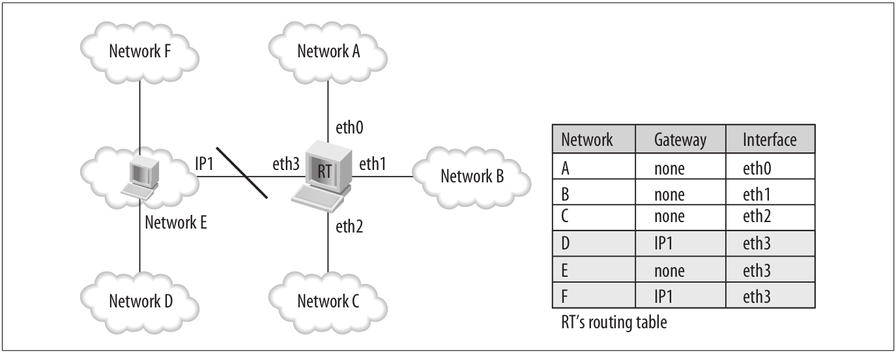
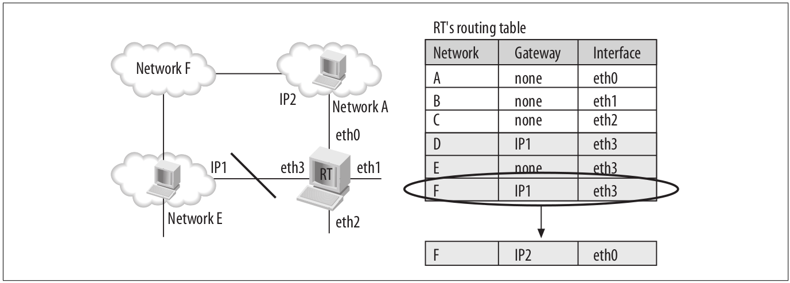

通知链
Table of Contents
内核的许多子系统都是相互独立的，所以发生在其中一个子系统的事情也许是其它子系统关心的．为了完成这种通知，Linux使用一种叫做通知链的机制．
在本文中，将会介绍以下内容：
- 通知链如何声明以及网络代码定义了哪些通知链．
- 某个内核子系统怎样注册到一个通知链．
- 某个内核子系统怎样发送通知到通知链．
要注意的是通知链仅用于内核子系统间，至于内核和用户空间的机制，参考本系列的其它文章．
1 为什么要有通知链
如下图，假设有一个Linux路由器具有4个接口，这个图展示了这个路由器和五个网络的关系，以及一个简化版的路由表．

Figure 1: 一个Linux路由器的例子
在这个图中，通过接口eth0网络A直接连接到RT路由器，而网络F并未直接连接到RT．但是RT的eth3接口直接连接到另一个路由器，而这个路由器有一个接口具有地址IP1，这个路由器知道怎么到达网络F，其它情况是类似的．简而言之，某些网络可以直接连接而另外一些网络则需要额外的一个或多个路由器才能到达．
现在假设接口eth3断掉了，因为硬件错误或者管理员的手动配置命令．这样网络D，E以及F就不通过RT达到了，那么这个信息就需要从路由表中移除，谁来负责告知路由子系统关于这个接口的故障呢？就是通知链．
而下面的图显示了一个更加复杂的情况，在这里路由子系统要和动态路由协议交互．

在上图中，从RT出发，网络F可以经由网络A或E到达，在最初的时候，选择了通过网络E，假设现在网络E不可达了，那么路由表必须更新，到达网络F现在经由网络A．这样的信息也需要通知到管理路由表的路由子系统，也就是通知链的必要性．